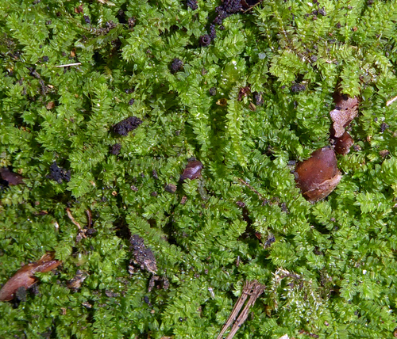

Racopilaceae
Racopilum Moss Family
The Racopilaceae is a family of pleurocarpous mosses primarily found in tropical, subtropical, and Southern Hemisphere temperate regions. They are characterized by their distinctive dimorphic leaves: larger lateral leaves arranged in two rows give the shoots a flattened appearance, while a third row of much smaller leaves occurs on the dorsal (upper) surface.
Overview
Racopilaceae is a relatively small family of mosses whose phylogenetic placement has been debated; it is sometimes placed near Hypnales or Bryales, or increasingly recognized in its own order, Racopilales. The family is defined by the unique leaf dimorphism, with two rows of large lateral leaves and one row of small dorsal leaves (or occasionally ventral in some classifications).
These mosses typically form dense mats or wefts in humid environments. They are common as epiphytes on tree trunks, branches, and logs, as well as growing on rocks (epilithic) or soil banks in forests. Their distribution is largely pantropical and subtropical, extending into moist temperate forests, particularly in the Southern Hemisphere (e.g., New Zealand, Australia, southern South America).
Quick Facts
- Scientific Name: Racopilaceae Kindb.
- Common Name: Racopilum Moss Family (no single widely accepted common name)
- Number of Genera: Approximately 2 (Racopilum, Powellia)
- Number of Species: Approximately 50-60
- Distribution: Pantropical and subtropical, extending into Southern Hemisphere temperate regions.
- Evolutionary Group: Bryophytes - Mosses (Class: Bryopsida, Order: Racopilales / Hypnales / Bryales - placement varies)
Key Characteristics
Growth Form and Habit
Plants are pleurocarpous, forming dense, often extensive mats or wefts. Stems are typically creeping, with pinnate or irregular branching, often appearing flattened (complanate) due to the leaf arrangement.
Leaves
Leaves are highly distinctive due to being dimorphic (two forms) and arranged in three rows. The lateral leaves (in two rows) are much larger, typically spreading widely, often asymmetric (especially the base), ovate to oblong-lanceolate, and usually short-acuminate. The dorsal leaves (in one row on the upper surface of the stem) are much smaller, typically appressed to the stem or somewhat spreading, and often lanceolate or triangular. Leaf margins are usually serrated or toothed, at least in the upper part. The costa (midrib) is single and strong, typically ending below the apex or percurrent (reaching the apex), sometimes excurrent as a short point. Leaf cells are small, isodiametric (quadrate, rounded, or hexagonal), firm-walled, and typically papillose, often with a single papilla over each cell lumen, giving the leaves a dull appearance. Alar cells at the basal corners are generally not distinctly differentiated.
Sporophyte (Capsule)
Sporophytes arise laterally from the stems. The seta (stalk) is usually long, erect, and frequently roughened by papillae or appearing hispid (hairy). The capsule is typically inclined to horizontal, ovoid to cylindrical, often curved (arcuate), and frequently becomes strongly ribbed or furrowed when dry and empty. The operculum (lid) is usually conical to rostrate (beaked).
The peristome is double and well-developed, generally of the Hypnoid type (though sometimes considered closer to Bryoid). The 16 outer exostome teeth are lanceolate, yellowish to brownish, usually cross-striate below and papillose above. The inner endostome consists of a high basal membrane, keeled segments (often perforated), and well-developed cilia.
Habitat
Commonly found in humid, shaded to semi-exposed habitats within tropical, subtropical, and moist temperate forests. They grow frequently as epiphytes on tree trunks, branches, exposed roots, and decaying logs, as epiliths on rocks (often near streams), and also terrestrially on soil banks, trailsides, and disturbed ground.
Field Identification
Racopilaceae are often recognizable by their unique leaf arrangement:
Primary Identification Features
- Dimorphic Leaves: The presence of large lateral leaves in two rows combined with much smaller dorsal leaves in a third row is the most diagnostic feature.
- Pleurocarpous Growth: Forming mats or wefts with lateral sporophytes.
- Papillose Leaf Cells: Leaves typically appear dull due to papillose cells (confirm with magnification).
- Habitat/Distribution: Common in humid forests, especially tropical/subtropical and Southern Hemisphere.
Secondary Identification Features
- Flattened Shoot Appearance: Due to the large lateral leaves.
- Single Strong Costa: Midrib usually prominent.
- Toothed Leaf Margins: Margins often serrated.
- Papillose/Hairy Seta: Stalk of the capsule often appears rough (use lens).
- Inclined, Ribbed Capsule: Characteristic sporophyte shape and texture.
Seasonal Identification Tips
- Year-Round Gametophytes: The distinctive vegetative structure is visible year-round.
- Sporophytes Common: Many species fruit readily, and sporophytes with their often papillose setae and ribbed capsules can be found frequently.
Common Confusion Points
- Hypopterygiaceae: Also possess dimorphic leaves (lateral leaves + ventral underleaves) and can have a flattened appearance. However, Hypopterygiaceae typically have a more distinctly dendroid or frond-like growth with a stipe, often smooth leaf cells, and the third row of leaves is ventral (underneath), not dorsal.
- Fissidentaceae: Have leaves in two rows (distichous), but the unique equitant structure (basal pocket) is very different, and they are acrocarpous.
- Complanate Pleurocarps (e.g., Neckeraceae, Plagiotheciaceae): These families have flattened shoots but lack the distinct third row of smaller dorsal leaves found in Racopilaceae. Their leaf cells are often smooth, and costa structure differs.
- Leafy Liverworts: Some liverworts have leaves in two main rows plus underleaves, but their cellular structure, lack of costa, and different sporophyte types distinguish them.
Field Guide Quick Reference
Look For:
- Pleurocarpous mats/wefts
- Dimorphic leaves: 2 rows of large lateral leaves + 1 row of small dorsal leaves
- Shoots often appear flattened
- Leaf cells typically papillose (dull look)
- Habitat: Humid forests (epiphytic, epilithic, terrestrial)
Key Variations:
- Genera Racopilum, Powellia
- Costa single, strong
- Seta often papillose/hairy
- Capsule inclined, ribbed
Notable Examples
The genus Racopilum contains most of the species in the family.

Racopilum cuspidigerum
(No common name widely used)
A widespread species found across tropical and subtropical Asia, Australasia, and the Pacific. It forms dense, often yellowish-green mats on soil banks, rocks, and tree bases. Lateral leaves are ovate and asymmetric, while the dorsal leaves are smaller and appressed. Leaf cells are papillose. The seta is typically papillose, and the capsule inclined and ribbed.

Racopilum robustum
(No common name widely used)
Found in similar regions to R. cuspidigerum, often in wetter habitats. As the name suggests, it is generally a larger, more robust plant. It exhibits the characteristic dimorphic leaves, papillose cells, and often papillose seta with inclined, ribbed capsules. Distinctions between Racopilum species often rely on subtle details of leaf shape, dentition, and cell structure.
Phylogeny and Classification
The phylogenetic position of Racopilaceae remains somewhat uncertain and has been debated. Traditionally, it was often placed within or near the Hypnales or sometimes associated with Bryales due to its peristome structure. However, its unique leaf dimorphism sets it apart from typical members of those large orders.
More recent molecular studies often suggest a more isolated position, leading to its placement in its own distinct order, Racopilales. This order might be related to other basal pleurocarpous lineages or groups like Rhizogoniales or Hypopterygiaceae, but its exact sister relationships require further investigation. It clearly represents a distinct evolutionary lineage characterized by its specialized leaf morphology.
Position in Plant Phylogeny
- Kingdom: Plantae
- Division: Bryophyta (Mosses)
- Class: Bryopsida
- Order: Racopilales (or Hypnales / Bryales - placement varies)
- Family: Racopilaceae
Evolutionary Significance
The Racopilaceae family is significant for:
- Leaf Dimorphism: Representing a striking example of leaf differentiation within a single shoot, likely related to optimizing light capture or water relations in their specific environments.
- Tropical/Southern Hemisphere Diversity: Contributing significantly to the bryophyte diversity of these regions, particularly in epiphytic and epilithic communities.
- Phylogenetic Uncertainty: Highlighting areas where the relationships among major pleurocarpous moss lineages are still being resolved.
- Papillose Setae: The presence of roughened setae in many species is an interesting trait, possibly related to protection or dispersal.